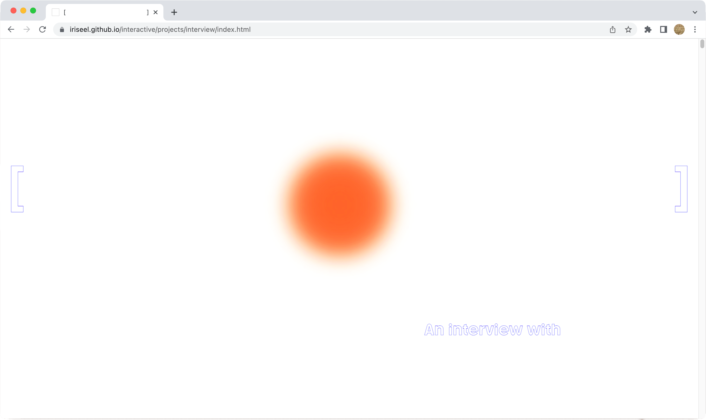
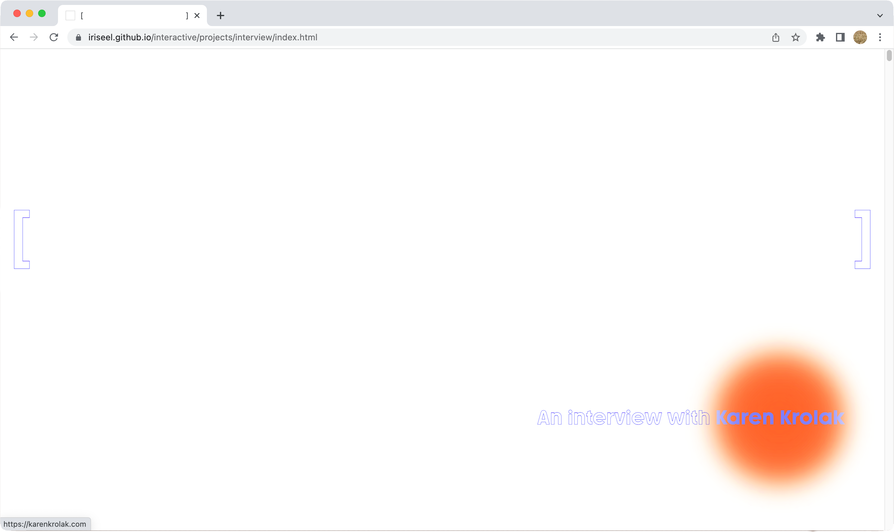
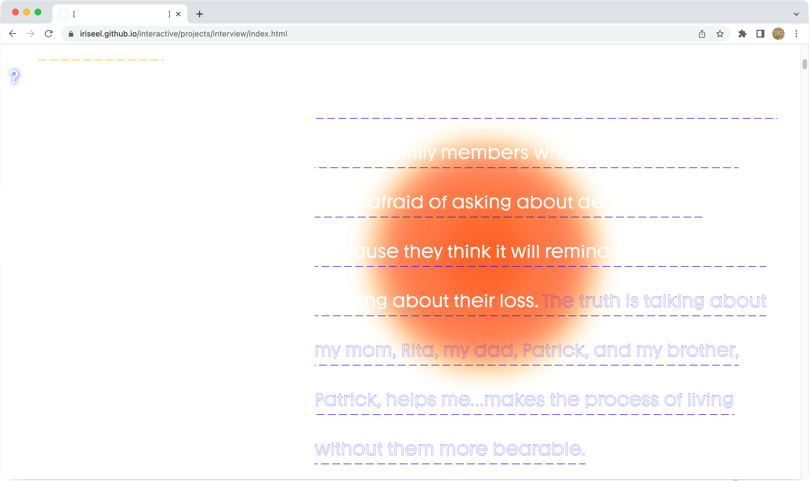
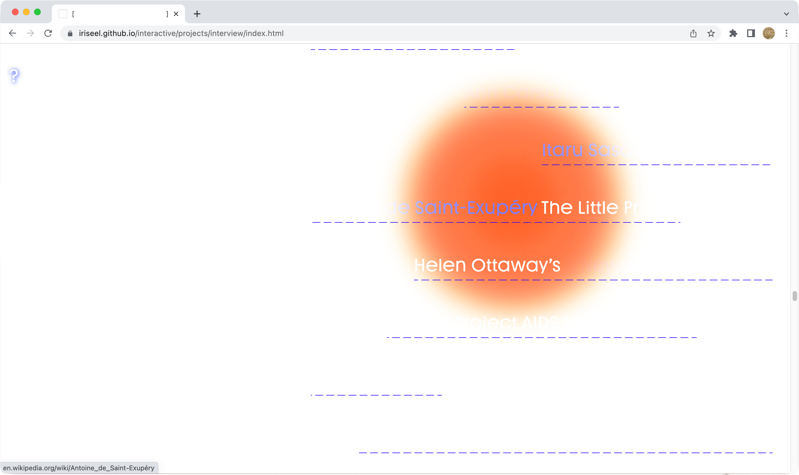
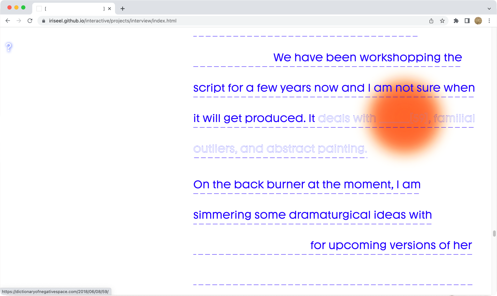

Karen Krolak is a free range collaborator and interdisciplinary artist and dancer. Our paths had previously crossed when we both created events for Din Din, a 2020 series of free, socially-distanced outdoor public events which used food and art to build community.
Then, in the spring of 2022, I conducted an interview with Krolak on her practice. I then designed and hand-coded a website to host our conversation. Throughout our exchange and as I was building the site, I was especially drawn to Krolak's “Dictionary of Negative Space,” an index of words that the English language lacks to decribe mourning, trauma, and repair.
Major features of the site include: a red dot left by the cursor as the user moves around the page, reminiscent both of the trace of a (lost) body and Krolak's practice as a dancer; mostly "invisible" text that is lifted into view only when hovered over by the red cursor; and a general appeal to the user to dwell, linger, and take time before reaching an understanding of the site's content.




